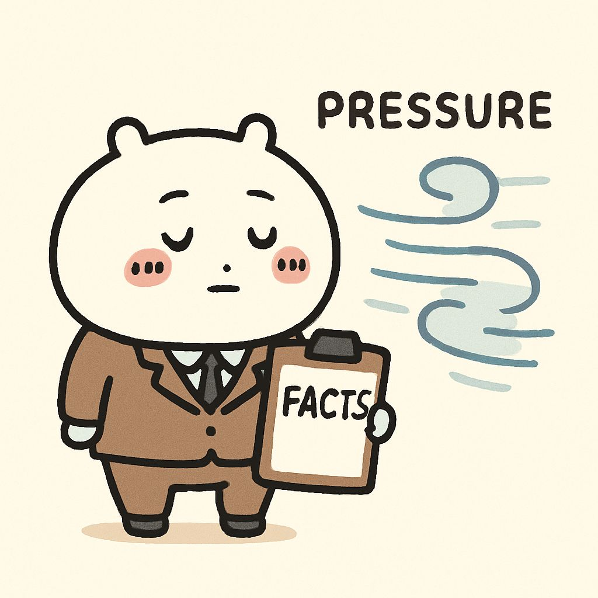

Module 1: Cultivating the Essential GLP QA Auditor Mindset
Lesson 1.3: Pillars of Professionalism: Objectivity, Independence, and Unwavering Integrity
Introduction: The Foundation of Trust
In previous lessons, we discussed the QA auditor's purpose as a guardian of data integrity and the importance of a proactive, "Quality First" mindset. These are powerful concepts, but they stand on an even more fundamental bedrock: your professionalism. This includes unwavering objectivity, independence, and integrity.
These pillars are not just abstract ideals; they are practical necessities that ensure your findings are credible, your recommendations are respected, and your role truly adds value. This lesson will explore how to embody these traits, especially when faced with pressures or conflicts of interest, and the importance of timeliness in addressing observations.
Bite-sized Lesson: Defining the Pillars
Let's break down what each pillar means for a GLP QA Auditor:
- Objectivity: This means being fair, impartial, and unbiased in your assessments. Your observations and conclusions must be based solely on factual evidence and GLP regulations, not on personal opinions, relationships, or external pressures. It's about "seeing things as they are," not as you wish them to be or as others want them to be perceived.
- Independence: This refers to your ability to perform your duties free from undue influence or interference. You should not be responsible for the direct conduct of the studies you are auditing, nor should your reporting lines compromise your ability to report findings truthfully. This structural independence is crucial for unbiased oversight.
- Unwavering Integrity: This encompasses honesty, trustworthiness, and adherence to strong moral and ethical principles. It means doing the right thing, even when no one is watching, and having the courage to report findings accurately, regardless of potential discomfort or pushback. Integrity is the cornerstone of your credibility.
Simplified Explanation: Maintaining Your Stance
Think of these pillars as your internal compass. In the complex world of GLP, you will inevitably encounter situations that challenge these principles. Maintaining your stance requires:
- Fact-Based Reporting: Always rely on documented evidence. If it's not written down, it didn't happen (in GLP terms).
- Clear Communication: Articulate your findings clearly, concisely, and without emotional language. Stick to the facts.
- Understanding Your Role: Remember you are there to ensure compliance and data integrity, not to be a "friend" or an "enemy."
- Escalation Pathways: Know when and how to escalate issues if your independence or objectivity is compromised, or if findings are not being addressed appropriately.
- Timeliness: Addressing observations with timeliness is not just about efficiency; it's an act of integrity. Delays can compromise data, prolong non-compliance, and signal a lack of commitment to quality. Prompt action demonstrates your dedication to resolving issues and upholding standards.
Real-World Example 1: Pressure to Downplay a Finding in Bioanalysis
Scenario: During a phase audit of a Bioanalysis study, you identify a significant deviation: a critical instrument calibration was performed outside the specified window, potentially impacting the accuracy of a large batch of sample analyses. The Study Director, under pressure to meet a submission deadline, approaches you privately and suggests "reclassifying" the finding as minor or "handling it internally" without a formal deviation report, arguing it was a small oversight and the data "looks fine."
Elite QA Auditor Mindset (Upholding Objectivity, Independence, and Integrity with Timeliness):
- Objectivity: You acknowledge the Study Director's pressure but immediately revert to the facts. The calibration was out of specification, which is a clear GLP non-compliance. The "data looks fine" is subjective and not a scientific justification for an out-of-spec calibration.
- Independence: You politely but firmly explain that as QA, your role is independent and requires reporting all significant findings objectively, regardless of study timelines or personal relationships. You cannot compromise the integrity of the audit process or the data.
- Integrity: You explain the potential regulatory consequences of not formally documenting such a finding (e.g., questions about data reliability, potential for regulatory inspection findings). You emphasize that your integrity, and by extension the organization's, depends on transparent and accurate reporting.
- Timeliness: You inform the Study Director that the deviation will be formally documented promptly, as delaying the report would only prolong the uncertainty and potential impact on the study. You offer to help facilitate the root cause analysis and CAPA development quickly to minimize further delays, but the finding *will* be reported.
- Action: You proceed with documenting the deviation as per SOP, ensuring all facts are captured, and initiate the formal discussion with relevant management (e.g., Head of Bioanalysis, Head of QA) to ensure appropriate remediation is planned and executed. You do not let the pressure influence your judgment or the reporting process.
Real-World Example 2: Auditing Friends in Clinical Pathology

Scenario: You are assigned to conduct a facility audit of the Clinical Pathology department. You have several close friends who work there, and you frequently socialize outside of work. During the audit, you discover a recurring issue with the daily maintenance logs for a key analyzer – they are often incomplete or signed off without all checks being performed, a task typically handled by one of your friends.
Struggles Faced by the Auditor:
- Personal Discomfort: The natural inclination to protect friends, fear of damaging personal relationships, or being seen as "nitpicky."
- Perceived Bias: Others might question your impartiality if they know of your close relationships.
- Emotional Toll: It can be genuinely difficult to deliver critical findings to someone you care about.
Risks of Compromising Professionalism:
- Undermining Credibility: If you overlook findings or soften your language, your credibility as an auditor, and that of the entire QA unit, will be eroded.
- Regulatory Non-Compliance: Overlooking issues leads to non-compliance, which can result in regulatory findings during inspections, impacting the organization's reputation and ability to conduct studies.
- Compromised Data Integrity: Incomplete maintenance logs mean the analyzer's performance might not be consistently verified, potentially leading to unreliable clinical pathology data that affects study conclusions.
- Erosion of Trust: Other departments might lose trust in QA if they perceive favoritism.
Elite QA Auditor Mindset (Maintaining Objectivity, Independence, and Integrity):
- Pre-Audit Mindset: Before starting, mentally separate your professional role from your personal relationships. Remind yourself that your responsibility is to GLP, data integrity, and patient/environmental safety, which ultimately benefits everyone, including your friends by helping them improve.
- Focus on the Process, Not the Person: Frame your observations around the process deficiency (e.g., "the maintenance log procedure was not consistently followed") rather than personal blame ("[Friend's Name] didn't fill out the log").
- Document Objectively: Record the factual evidence of the incomplete logs (dates, specific missing checks). Do not include personal opinions or assumptions about *why* it happened.
- Communicate Professionally: When discussing the finding with your friend, maintain a professional tone. Explain the GLP requirement and the potential risk to data integrity. Emphasize that the goal is to improve the quality system.
- Maintain Professional Distance: During the audit, avoid excessive personal conversation. Keep interactions focused on the audit scope.
- Seek Peer Review (if needed): If you find a particularly sensitive or significant issue, or feel your objectivity is truly challenged, discuss it with your QA manager or another senior QA auditor to ensure your approach and findings are sound and unbiased.
- Follow Standard CAPA Process: Ensure the CAPA (Corrective and Preventive Action) for the finding is robust, addresses the root cause, and is monitored with the same rigor as any other CAPA, regardless of who is responsible for its implementation.
Suggestions for Performing This Type of Audit / CAPA Monitoring:
- Self-Awareness: Recognize the potential for bias and actively work to counteract it.
- Strict Adherence to SOPs: Follow your audit and CAPA monitoring SOPs meticulously. This provides a clear, objective framework.
- "Explain the Why": When presenting findings, explain the GLP principle and the *risk* associated with the non-compliance. This shifts the focus from personal error to systemic improvement.
- Focus on Training & Systemic Issues: Often, issues stem from inadequate training, unclear SOPs, or workflow pressures. Help identify these root causes rather than just pointing out individual mistakes.
- Transparency (within QA): If you anticipate a conflict of interest due to close relationships, inform your QA manager beforehand. They might decide to assign another auditor, or at least be aware of the situation.
Key Takeaways from Examples:
- External Pressure is Common: Be prepared for attempts to influence your findings from various sources, including management and colleagues.
- Personal Relationships are a Test: Auditing friends requires heightened self-awareness and strict adherence to professional principles.
- Facts are Your Shield: Always rely on documented evidence and GLP regulations to support your observations.
- Your Role Protects Everyone: Upholding objectivity and integrity ultimately protects the organization's reputation, regulatory standing, and the reliability of its scientific data, which benefits all employees.
- Courage and Consistency: It takes courage to stand firm, but consistent professionalism builds long-term trust and respect for the QA function.
- Timeliness Reinforces Integrity: Promptly addressing and reporting issues demonstrates your commitment to quality and prevents escalation of problems.
Checkpoint: Quick Quiz
A GLP QA auditor is approached by a colleague from the Toxicology department who asks them to "look the other way" on a minor documentation error found during an audit. How should the QA auditor respond, demonstrating professionalism?
- Agree, as it's a minor error and won't impact the study significantly.
- Report the colleague to management immediately for attempting to influence.
- Politely explain that all findings, regardless of perceived severity, must be documented objectively as per GLP principles and internal SOPs.
- Offer to fix the error themselves to avoid formal documentation.
Correct Answer: c) Politely explain that all findings, regardless of perceived severity, must be documented objectively as per GLP principles and internal SOPs.
Explanation: This response upholds objectivity and integrity by adhering to established procedures and GLP, while maintaining professionalism. Agreeing (a) or fixing it yourself (d) compromises integrity. Reporting immediately (b) might be an overreaction for a first instance, though escalation pathways are important for repeated or severe attempts at influence.
Reading List (For Deeper Dive - 10-15 minutes)
- OECD Series on Principles of GLP and Compliance Monitoring, No. 1: OECD Principles of Good Laboratory Practice (as revised in 1997) - Focus on Section 2.2 (Quality Assurance Programme) and Section 3 (Personnel). Note the emphasis on QA's independence. (Available on OECD website)
- 21 CFR Part 58: Good Laboratory Practice for Nonclinical Laboratory Studies - Review Subpart B (Organization and Personnel), particularly the responsibilities of the Quality Assurance Unit. (Available on FDA website)
- Your Organization's Ethics Policy/Code of Conduct: Understand how your company's broader ethical guidelines apply to your role.
Relevant Tools/Resources
- Your QA Unit's Charter/SOP: This document should clearly define the independence and authority of your QA unit.
- Conflict of Interest Policy: Familiarize yourself with any policies related to avoiding conflicts of interest.
- Escalation Matrix: Know the formal process for escalating unresolved issues or attempts to compromise QA's integrity.
Optional Challenge (For Deeper Learning - 10 minutes)
Reflective Exercise: Recall a time (or imagine a scenario) where you felt pressure to compromise your objectivity or independence. How did you handle it? What could you have done differently, applying the principles discussed today?
Discussion Point: Discuss with a peer or mentor: "How does maintaining strict independence as QA ultimately benefit the entire organization, even if it sometimes creates short-term discomfort for other departments?"
Summary Audio
Listen to a quick summary of this lesson.